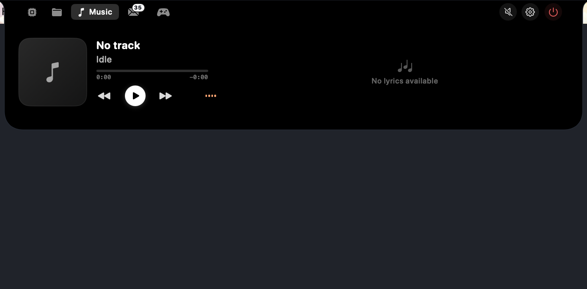

macOS 14+ · notch panel
Notch panel for coding agents.
Watch Claude Code, Codex and Gemini work from the MacBook notch. Approve tool prompts, inspect the Git graph and follow music without leaving your editor.
Captured live from Morrow.app · local hook socket
01HOOK: LOCAL UNIX SOCKET
02AGENTS: CLAUDE · CODEX · GEMINI · CURSOR
03TABS: AGENTS · WORKSPACE · MUSIC
04MACOS: NOTARIZED
01 / inside the notch
One island, real captures.
Select a capability to inspect the actual Morrow macOS panel.

Agents tab · 3 live sessions
Morrow.app (macOS)
02 / platform matrix
Platform status
Shared hook contract across all three desktops. Unsupported host capabilities are reported plainly.
| Platform | Status | Host evidence & limits |
|---|---|---|
| macOS | available | Developer ID signed, notarized DMG, Sparkle updates |
| Linux X11 | preview | Capability readers ported (xdotool, xprop, playerctl); real X11 host gate not run |
| Windows | preview | NSIS per-user build; named-pipe tunnel unsupported over ssh -R (#451) |